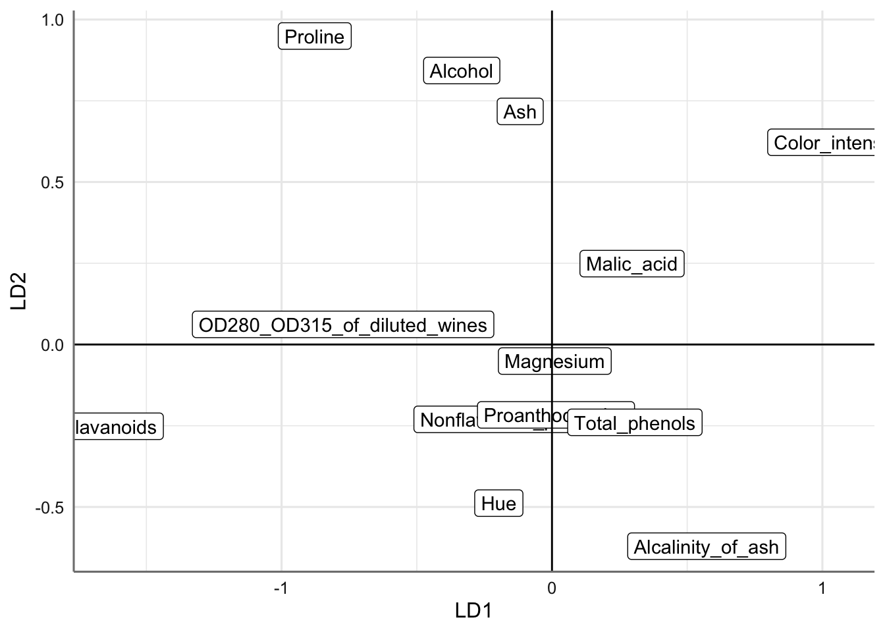

# Paquetes anteriores
library(tidyverse)
library(sjPlot)
library(knitr) # para formatos de tablas
library(skimr)
library(DataExplorer)
library(GGally)
library(gridExtra)
library(ggpubr)
library(cvms)
library(kknn)
library(rpart.plot)
library(rda)
library(klaR)
library(ggord)
theme_set(theme_sjplot2())
# Paquetes AA
library(mlr3verse)
library(mlr3tuning)
library(mlr3tuningspaces)
library(gbm)
library(RWeka)
library(xgboost)
library(lightgbm)15 Análisis discriminante (AD)
El Análisis Discriminante es un método de clasificación supervisado de variables cualitativas en el que dos o más grupos son conocidos a priori y nuevas observaciones se clasifican en uno de ellos en función de sus características.
Supongamos que un conjunto de objetos se clasifica en una serie de grupos; el Análisis Discriminante equivale a un análisis de regresión donde la variable dependiente es categórica y tiene como categorías la etiqueta de cada uno de los grupos, y donde las variables independientes son continuas y determinan a qué grupos pertenecen los objetos. Se trata de encontrar relaciones lineales entre las variables continuas que mejor discriminen en los grupos dados a los objetos. Además, se trata de definir una regla de decisión que asigne un objeto nuevo, que no sabemos clasificar previamente, a uno de los grupos prefijados.
Haciendo uso del teorema de Bayes, el análisis discriminante estima la probabilidad de que una observación, dado un determinado valor de los predictores, pertenezca a cada una de las clases de la variable cualitativa, \(P(Y=k|X=x)\). Finalmente se asigna la observación a la clase \(k\) para la que la probabilidad predicha es mayor.
El proceso de un análisis discriminante puede resumirse en 6 pasos:
- Disponer de un conjunto de datos de entrenamiento (training data) en el que se conoce a que grupo pertenece cada observación.
- Calcular las probabilidades previas (prior probabilities): la proporción esperada de observaciones que pertenecen a cada grupo.
- Determinar si la varianza o matriz de covarianzas de las predictoras es homogénea en todos los grupos.
- Estimar los parámetros necesarios para las funciones de probabilidad condicional, verificando que se cumplen las condiciones para hacerlo.
- Calcular el resultado de la función discriminante. El resultado de esta determina a qué grupo se asigna cada observación.
- Utilizar validación cruzada para estimar las probabilidades de clasificaciones erróneas.
15.1 Planteamiento del problema
Para mostrar el uso del algoritmo de Análisis Discriminante comenzamos con la situación más sencilla donde disponemos de una única predictora y dos grupos.
Consideramos una respuesta \(Y\) de tipo categórico con \(K=2\) grupos y una predictora \(X\) de tipo numérico. Se denota entonces:
\(\pi_1\) y \(\pi_2\) como las probabilidades previas de que una observación aleatoria pertenezca a la clase \(k\) de la respuesta \(Y\).
\(f_k(x) \equiv P(X=x|Y=k), k=1,2\) son las funciones de densidad de probabilidad condicional de \(X\) para una observación que pertenece a la clase \(k\). Cuanto mayor sea \(f_k(X)\) mayor la probabilidad de que una observación de la clase \(k\) adquiera un valor de \(X≈x\).
\(P(Y=k|X=x)\) son las probabilidades a posteriori de que una observación pertenezca a la clase \(k\) siendo \(x\) el valor del predictor.
Haciendo uso del teorema de Bayes tenemos que:
\[P(Y=k|X=x) = \frac{\pi_kf_k(x)}{\sum_{i=1}^2 \pi_kf_k(X)}\]
La clasificación con menor error (clasificación de Bayes) se consigue asignando la observación a aquel grupo que maximice la probabilidad posterior. Dado que el denominador \(\sum_{i=1}^2 \pi_kf_k(X)\) es igual para todas las clases, la norma de clasificación es equivalente a decir que se asignará cada observación a aquel grupo para el que \(\pi_kf_k(x)\) sea mayor. Si las probabilidades a priori son iguales la regla de clasificación asigna a la categoría \(k\) con mayor \(f_k(x)\).
Si tenemos en cuenta los errores de clasificación \(c(i|j)\) de clasificar un objeto en el grupo \(i\) cuando realmente pertenece al \(j\), la regla de clasificación para clasificar en el grupo 2 frente al 1 viene dada por:
\[\frac{f_2(x)\pi_2}{c(2|1)} > \frac{f_1(x)\pi_1}{c(1|2)}.\]
De forma análoga podemos establecer la regla de clasificación en el grupo 1 frente al 2. Si los errores de clasificación y probabilidades iniciales son iguales la regla de clasificación se simplifica a la evaluación de la función de densidad dentro de cada grupo.
Generalizar la regla de decisión cuando disponemos de un conjunto \(X\) de predictoras consiste simplemente en la evaluación de las probabilidades a priori y las densidades correspondientes.
Los dos algoritmos más conocidos del análisis discriminante son el análisis discriminante lineal (LDA) y el análisis discriminante cuadrático (QDA). La principal diferencia entre ellos es que el LDA asume que la matriz de varianzas y covarianzas asociada con las predictoras en cada uno de los grupos son iguales, es decir, asumimos homogeneidad de varianzas entre los grupos, mientras que en QDA dichas matrices no tienen por qué ser iguales.
15.2 AD lineal
Los aspectos teóricos relacionados con el LDA se estructuran presentando en primer lugar los fundamentos del algoritmo, el proceso de estimación necesario para evaluar las funciones discriminantes y finalizamos con el proceso de obtención de las funciones discriminantes canónicas. Comenzamos con la situación más sencilla donde consideramos dos grupos pero generalizaremos al caso de \(k\) grupos.
15.2.1 Fundamentos
Para que la clasificación basada en Bayes sea posible, se necesita conocer la probabilidad poblacional de que una observación cualquiera pertenezca a cada clase (\(\pi_k\)) y la probabilidad poblacional de que una observación que pertenece a la clase \(k\) adquiera el valor \(x\) en el predictor \(f_k(x)\).
En el caso de la probabilidad a priori la estimación suele ser sencilla. La probabilidad de que una observación cualquiera pertenezca a la clase \(k\) es igual al número de observaciones de esa clase entre el número total de observaciones \(\hat{\pi} = n_k/N\), donde \(n_k\) es el número de observaciones en el grupo \(k\) y \(N\) es el número total de observaciones.
La estimación de \(f_k(X)\) no es tan directa y por ahora asumimos que dichas funciones de densidad son distribuciones normales multivariantes con vector de medias (\(\mu_i\)) distintas para cada grupo pero con la misma matriz de varianzas-covarianzas (\(\Sigma\)), es decir:
\[f_i(X) = \frac{1}{(2\pi)^{k/2}|\Sigma|^{1/2}} exp\left\{-\frac{1}{2}(x-\mu_i)^t \Sigma^{-1}(x-\mu_i)\right\}.\]
De esta forma, la regla de clasificación en el grupo 2 frente al grupo 1 (considerando logaritmos), asumiendo que los errores de clasificación son iguales, viene dada por:
\[log(\pi_2) + log(f_2(X)) > log(\pi_1) + log(f_1(X))\]
que sustituyendo por las funciones de densidad correspondientes tenemos que:
\[log(\pi_2) - \frac{1}{2}(x-\mu_2)^t \Sigma^{-1}(x-\mu_2) > log(\pi_1) + - \frac{1}{2}(x-\mu_1)^t \Sigma^{-1}(x-\mu_1)\]
que tras operar nos conduce a:
\[ (x-\mu_1)^t \Sigma^{-1}(x-\mu_1) > (x-\mu_2)^t \Sigma^{-1}(x-\mu_2) - 2log(\pi_2/\pi_1).\]
Los términos \((x-\mu_1)^t \Sigma^{-1}(x-\mu_1)\) y \((x-\mu_2)^t \Sigma^{-1}(x-\mu_2)\) son las distancias de Mahalanobis del punto \(x\) con respecto a las medias de cada uno de los grupos. Mediante cálculos sencillos la regla de clasificación anterior viene dada por:
\[w^{t}x = w^{t}\left(\frac{\mu_1 + \mu_2}{2}\right)-log(\pi_2/\pi_1)\]
donde \(w=\Sigma^{-1}(\mu_2-\mu_1)\). La ecuación anterior corresponde con la de un hiperplano de forma que el procedimiento de clasificación puede resumirse así:
- Dados los valores de \(\mu_1\), \(\mu_2\) y \(\Sigma\) obtenemos en primer lugar el vector \(w\).
- Escribir la función discriminante como una combinación lineal de los valores de la variable con los pesos dados por el vector \(w\):
\[g(x) = w^{t}x,\]
- Introducir en esta función los valores observados para el nuevo individuo a clasificar, \(x_0 = (x_{10},...,x_{k0})\) y evaluar la regla de clasificación establecida.
Si los costes y probabilidades a priori son iguales la regla de decisión se reduce entonces a clasificar en el grupo 2 si:
\[w^{t}x > w^{t}\left(\frac{\mu_1+\mu_2}{2}\right)\]
Esta regla equivale a proyectar el punto x que queremos clasificar y las medias de ambas poblaciones sobre una recta, y después asignar el punto a aquella población de cuya media se encuentre más próxima en la proyección. La función \(w^{t}x\) se denomina función discriminante.
15.2.2 Estimación de parámetros
En la práctica, a pesar de tener una certeza considerable de que \(X\) se distribuye de forma normal dentro de cada clase, los valores \(\mu_1...,\mu_k\), \(\pi_1,...,\pi_k\) y \(\Sigma\) se desconocen, por lo que tienen que ser estimados a partir de las observaciones. En este caso abordamos directamente el caso de \(K\) grupos o poblaciones.
La matriz general de predictoras \(X\) de dimensiones q × n (q variables y n individuos), se puede particionar ahora en \(K\) matrices correspondientes a las subpoblaciones. Se denomina \(x_{ijk}\) a los elementos de estas submatrices, donde \(i\) representa el individuo, \(j\) la variable y \(k\) el grupo o submatriz. Llamaremos \(n_k\) al número de elementos en el grupo \(k\) y el número total de observaciones se denomina \(n\).
Se denomina \(x^{t}_{ik}\) al vector fila que contiene los q valores de las variables para el individuo \(i\) en el grupo \(k\), es decir,
\[x^{t}_{ik} = (x_{i1k},...,x_{iqk})\]
El vector de medias dentro de cada clase o grupo es:
\[\bar{x}_k = \frac{1}{n_k}\sum_{i=1}^{n_k} x_{ik}\]
mientras que la matriz de varianzas-covarianzas para los sujetos del grupo \(k\) viene dada por:
\[\hat{S}_k=\frac{1}{n_k-1} \sum_{i=1}^{n_k} (x_{ik}-\bar{x}_k)(x_{ik}-\bar{x}_k)^t.\]
Si los \(k\) grupos o clases tienen la misma matriz de varianzas-covarianzas una estimación de dicha matriz viene dada por:
\[\hat{S}_{w} = \sum_{k=1}^K \frac{n_k-1}{n-k}\hat{S}_k.\]
Llamaremos \(W\) a la matriz de sumas de cuadrados dentro de las clases que viene dada por:
\[W = (n-K)\hat{S}_w.\]
Podemos utilizar ahora las estimaciones consideradas para obtener las correspondientes funciones discriminantes.
15.2.3 Variables canócicas discriminantes
El enfoque anterior puede generalizarse para encontrar variables canónicas que tengan el máximo poder discriminante para clasificar nuevos elementos respecto a las poblaciones. El objetivo es, en lugar de trabajar con las variables originales \(X\), definir \(r\) variables canónicas, \(z_i, i = 1,...,r\) donde \(r = min(K − 1, q)\), que sean combinación lineal de las originales \(z_i = w_i^tx\) de modo que:
Las medias de las poblaciones \(\mu_k\) se expresan en términos de las variables canónicas donde \(z_1,...,z_K\) son vectores r × 1 cuyas coordenadas son las proyecciones de las medias sobre las \(r\) variables canónicas;
Se hace lo mismo para el punto \(x_0\) a clasificar donde se denota a \(z_0\) como dicho vector;
Clasificamos el punto en aquella población de cuya media se encuentre más próxima, con la distancia euclídea, en el espacio de las variables canónicas \(z\); es decir, lo clasificaremos en la población \(i\) si
\[(z_0-z_i)'(z_0-z_i) = \underset{k}{min} (z_0-z_k)'(z_0-z_k).\]
Tan sólo nos resta establecer el procedimiento para la obtención de las variables canónicas. Para resolver este problema debemos buscar un vector \(w\) tal que, cuando proyectamos los puntos sobre él, se obtiene la máxima variabilidad entre los grupos en relación a la variabilidad dentro de los grupos. La media de las observaciones del grupo \(k\) en esta nueva variable será:
\[\bar{z}_k = w^t\bar{x}_k\]
y la media para todos los datos viene dada por:
\[\bar{z}_T=w^t\bar{x}_T.\]
Se desea encontrar el vector \(w\) de manera que la separación entre las medias de los grupos sea máxima. Una medida de la distancia entre las medias \(z_1,..., z_K\) es la suma de cuadrados entre las medias dada por
\[\sum_{k=1}^K n_k(\bar{z}_k-\bar{z}_T)^2 = w^tBw,\]
con \(B\) la matriz de suma de cuadrados entre grupos. Para juzgar si este término es grande o pequeño, debemos compararlo con la variabilidad intrínseca de los datos o variabilidad intra clase dada por:
\[\sum_{j=1}^{n_k}\sum_{k=1}^K (z_{ik}-\bar{z}_k)^2 = w^tWw.\]
En definitiva, el criterio para encontrar la mejor dirección de proyección consiste en maximizar la separación relativa entre las medias, dada por:
\[\underset{w}{max} \frac{w^tBw}{w^tWw}.\]
La solución con este problema de maximización viene dada por los vectores propios asociados a los valores propios ordenados según su valor de mayor a menor de la matriz \(W^{-1}B.\) Por tanto, la primera función discriminante se corresponde con la combinación lineal de predictoras donde los valores de \(w\) son los valores del vector propio asociado con el mayor valor propio de \(W^{-1}B\). Los vectores propios de dicha matriz no serán, en general, ortogonales, y además el rango de dicha matriz será \(r\), es decir, el número máximo de funciones discriminantes que podemos construir. Tenemos entonces la funciones discriminantes dadas por la expresión:
\[z=U^tx\]
donde \(U^t\) es la matriz de dimensiones \(r \times q\) que contiene los vectores propios de \(W^{-1}B\) por filas. Las variables canónicas así obtenidas resuelven el problema de clasificación, de forma que, para clasificar un nuevo individuo \(x_0\) basta con calcular sus coordenadas \(z_0\) con la expresión anterior y asignarle al grupo de cuya media transformada esté más próxima mediante la distancia euclídea.
Si trabajamos con variables estandarizadas los vectores propios obtenidos nos proporcionan además la relevancia de cada predictora en la función de discriminación. Así mismo podemos utilizar los valores propios obtenidos para valorar la capacidad discriminatoria del modelo o el número de funciones discriminantes necesarias para obtener una buena clasificación. Este procedimiento es similar al seguido con las componentes principales para la reducción de la dimensión.
15.2.4 Probabilidades de cada clase
Una alternativa a la solución anterior a partir de los estimadores anteriores viene dada por los logaritmos de las probabilidades de cada etiqueta \(k\) que se pueden obtener a partir de la expresiones:
\[log(P(y=k|x) = -0.5(x-\mu_k)^t \Sigma^{-1} (x-\mu_k) + log(\pi_k)) + Constante\]
o alternativamente
\[log(P(y=k|x) = \beta_k^{t}x+\beta_{k0} + Constante\]
con \(\beta_k = \Sigma^{-1}\mu_k\) y \(\beta_{k0} = -0.5\mu^t\Sigma^{-1}\mu_k + log(\pi_k).\)
Si solo tenemos dos posibles etiquetas tan solo disponemos de una única ecuación y vector de pesos \(\beta\).
15.2.5 Precisión de la solución
La precisión o bondad de la solución obtenida se analiza mediante los procedimientos habituales de los problemas de clasificación entre los que el más relevante es el análisis de la matriz de confusión.
15.3 AD no lineal
El análisis discriminante no lineal se asocia casi siempre con El clasificador cuadrático o Quadratic Discriminat Analysis QDA se asemeja en gran medida al LDA, con la única diferencia de que el QDA considera que cada clase k tiene su propia matriz de covarianzas (\(\Sigma_k\)) y, como consecuencia, la función para estimar el logaritmo de la probabilidad de cada clase viene dada por:
\[log(P(y=k|x) = -0.5log|\Sigma_k|-0.5(x-\mu_k)^t \Sigma_k^{-1} (x-\mu_k) + log(\pi_k)\]
Estas funciones no son lineales por lo que se generan límites de decisión curvos y pueden aplicarse a situaciones en las que la separación entre grupos no es lineal. Además, dado que consideramos matrices de varianzas-covarianzas distintas no resulta necesario la verificación de la hipótesis de homogeneidad.
15.4 AD en R
Aunque en mlr3 se encuentran disponibles los modelos de aprendizaje classif.lda y classif.qda para el análisis discriminante lineal y cuadrático, es este caso optamos por utilizar directamente las funciones de R disponibles en las librerías MASS (instalada por defecto) y rda (que es necesario instalar). En los puntos siguientes se mostrara como hacer uso de las funciones de esas librerías para llevar a cabo el análisis discriminante. Para las soluciones gráficas deberemos instalar además los paquetes klaR y ggord. Para instalar este segundo es necesario ejecutar el código siguiente:
En primer lugar cargamos todas las librerías necesarias:
15.4.1 Bancos de datos
Para ejemplificar el uso de los modelos de análisis dicriminante vamos a utilizar tres bancos de datos: water potability para la clasificación de dos grupos, Wine recognotion, y Abalone para la clasificación de tres grupos. A continuación presentamos los tres bancos de datos y el código para cargar las bases de datos correspondientes.
15.4.1.1 Water Potability
El código para cargar el banco de datos es:
15.4.1.2 Wine recognition
En este banco de datos se recoge el resultado de un análisis químico de vinos cultivados en la misma región de Italia pero procedentes de tres cultivos distintos. El análisis determinó las cantidades de 13 características que se encuentran en cada una de las muestras de vinos. El objetivo que perseguimos es clasificar cada muestra en una de estas tres clases de vino (Class label) en función de sus características de tipo numérico. Este banco de datos no contiene valores perdidos.
# Leemos datos
winerecognition = read_rds("winerecognition.rds")
names(winerecognition) = c("Class", "Alcohol", "Malic_acid", "Ash", "Alcalinity_of_ash", "Magnesium", "Total_phenols", "Flavanoids", "Nonflavanoid_phenols", "Proanthocyanins", "Color_intensity", "Hue", "OD280_OD315_of_diluted_wines", "Proline")
# creamos la tarea
tsk_wine = as_task_classif(winerecognition, target = "Class")
# Generamos variable de estrato
tsk_wine$col_roles$stratum <- "Class"15.4.1.3 Abalone
En este conjunto de datos se recoge información sobre los abulones, de la familia de los moluscos. Se está interesado en medir su desarrollo, que viene determinado principalmente por su desarrollo sexual. Concretamente se consideran tres estados de desarrollo asociados con el atributo Sex: M``(machos),F(hembras), eI` (infantil o sin desarrollo sexual). Para clasificar cada sujeto se utiliza un conjunto de características que son de tipo numérico.
# Leemos los datos
abalone = read_rds("abalone.rds")
names(abalone) = c("Sex", "Length", "Diameter", "Height", "Whole_weight", "Shucked_weight", "Viscera_weight", "Shell_weight", "Rings")
# creamos la tarea
tsk_abalone = as_task_classif(abalone, target = "Sex")
# Generamos variable de estrato
tsk_abalone$col_roles$stratum <- "Sex"15.4.2 Modelos
Para cada banco de datos probamos diferentes modelos de análisis discriminante para ver como afectan las predictoras en la clasificación a través de la construcción de las funciones discriminantes.
15.4.2.1 Water potability
Comenzamos con el análisis del banco de datos de potabilidad del agua donde queremos discriminar entres dos grupos. En este caso solo podremos obtener una función discriminante como combinación de las predictoras consideradas. Comenzamos por dividir las muestras e imputar valores perdidos.
# División de muestras
set.seed(432)
splits = mlr3::partition(tsk_water, ratio = 0.8)
tsk_train_water = tsk_water$clone()$filter(splits$train)
tsk_test_water = tsk_water$clone()$filter(splits$test)
# preprocesado
pp_water = po("scale", param_vals = list(center = TRUE, scale = TRUE)) %>>%
po("imputemedian", affect_columns = selector_type("numeric"))
# Obtención de muestras
train = pp_water$train(tsk_train_water)
test = pp_water$train(tsk_test_water)
water_train = train[[1]]$data()
water_test = test[[1]]$data()Comenzamos con el modelo discriminante lineal.
# Modelo para la muestra de entrenamiento
ad.lineal = lda(Potability~., water_train)
# Resultados del modelo
ad.linealCall:
lda(Potability ~ ., data = water_train)
Prior probabilities of groups:
1 0
0.3900763 0.6099237
Group means:
Chloramines Conductivity Hardness Organic_carbon Solids
1 0.02445992 0.008382819 -0.0002709496 -0.04684461 0.04526142
0 -0.01564333 -0.005361227 0.0001732857 0.02995945 -0.02894691
Turbidity Sulfate Trihalomethanes ph
1 -0.007620776 -0.03646853 -0.0004807166 0.01402887
0 0.004873863 0.01680100 0.0013832328 -0.01559109
Coefficients of linear discriminants:
LD1
Chloramines -0.36974474
Conductivity -0.10857240
Hardness 0.00524105
Organic_carbon 0.58084020
Solids -0.55670481
Turbidity 0.12275871
Sulfate 0.43158436
Trihalomethanes 0.01286696
ph -0.37522197Los resultados del modelo son:
- Probabilidades a priori de cada uno de los grupos (
ad.lineal$prior). - Medias de las predictoras para cada uno de los grupos (
ad.lineal$means). - Coeficientes de la función discriminante para cada predictora (
ad.lineal$scaling). En este caso los coeficientes positivos favorecen el tipo potable, frente a los negativos que favorecen el tipo no potable. La ecuación de la función discriminante viene dada por (redondeando a dos decimales los coeficientes):
\[LD1 = -0.11 Chloramines + 0.17 Conductivity + 0.01 Hardness + 0.64 Organic_carbon -0.74 Solids + 0.13Turbidity + 0.10Sulfate -0.10Trihalomethanes -0.18ph\] Los coeficientes también nos permiten saber que predictoras son más relevantes en la función de discriminación. tan solo debemos ver que coeficientes son más grandes en valor absoluto. Para este modelo las predictoras Organic_carbon y Solids son las más relevantes en sentido positivo y negativo respectivamente.
Si se dispone de más de una función discriminante la solución nos proporciona la proporción de variabilidad explicada (discriminación) de cada función.
A continuación representamos las puntuaciones de la función discriminante tanto para la muestra de entrenamiento como de validación para valorar la capacidad de discriminación de dicha función. Recordemos que el análisis de reducción nos permite pasar del conjunto inicial de 9 predictoras a una única predictora dada por la función discriminante.
# Muestra de entrenamiento
p <- predict(ad.lineal, water_train)
ldahist(data = p$x[,1], g = water_train$Potability)# Muestra de validación
p <- predict(ad.lineal, water_test)
ldahist(data = p$x[,1], g = water_test$Potability)En ambas muestras podemos apreciar que las puntuaciones discriminantes para ambos grupos son muy similares, lo que sin duda provoca que nuestra función de discriminación no resulta muy adecuada. Para verificar este hecho vamos a obtener la matriz de confusión correspondiente a este modelo y calcularemos el porcentaje de clasificación correcta ponderada.
# predicción validación
pred_test = data.frame(truth = water_test$Potability, response = predict(ad.lineal, water_test)$class)
# matriz de confusión
cm = confusion_matrix(pred_test$truth, pred_test$response)
plot_confusion_matrix(cm$`Confusion Matrix`[[1]]) Como era de esperar los resultados de la matriz de confusión muestran el mal funcionamiento del análisis planteado. Podemos ver el porcentaje de clasificación correcta ponderada con:
Como era de esperar el resultado obtenido es muy malo.
Comenzamos ahora el análisis utilizando un modelo discriminante cuadrático.
# Modelo para la muestra de entrenamiento
ad.quad = qda(Potability~., water_train)
# Resultados del modelo
ad.quadCall:
qda(Potability ~ ., data = water_train)
Prior probabilities of groups:
1 0
0.3900763 0.6099237
Group means:
Chloramines Conductivity Hardness Organic_carbon Solids
1 0.02445992 0.008382819 -0.0002709496 -0.04684461 0.04526142
0 -0.01564333 -0.005361227 0.0001732857 0.02995945 -0.02894691
Turbidity Sulfate Trihalomethanes ph
1 -0.007620776 -0.03646853 -0.0004807166 0.01402887
0 0.004873863 0.01680100 0.0013832328 -0.01559109La solución del análisis discriminante cuadrático solo nos proporciona las probabilidades a priori y las medias de cada predictora en cada nivel de la respuesta. En este caso no podemos analizar directamente las puntuaciones de la función discriminante, pero si podemos estudiar la matriz de confusión asociada al modelo.
# predicción validación
pred_test = data.frame(truth = water_test$Potability, response = predict(ad.quad, water_test)$class)
# matriz de confusión
cm = confusion_matrix(pred_test$truth, pred_test$response)
plot_confusion_matrix(cm$`Confusion Matrix`[[1]]) Los resultados de la matriz de confusión muestran que este modelo tiene un comportamiento mejor que el lineal. Veamos el porcentaje de clasificación correcta ponderada.
El resultado obtenido es casi tan bueno como el del mejor modelo que habíamos obtenido hasta ahora para este conjunto de datos.
15.4.2.2 Wine recognition
En este caso disponemos de tres clases de vinos por lo que por defecto el análisis discriminante obtendrá dos funciones discriminantes en su solución. Comenzamos por el modelo lineal definiendo las muestras de entrenamiento y test.
# División de muestras
set.seed(432)
splits = mlr3::partition(tsk_wine, ratio = 0.8)
tsk_train_wine = tsk_wine$clone()$filter(splits$train)
tsk_test_wine = tsk_wine$clone()$filter(splits$test)
# preprocesado
pp_wine = po("scale", param_vals = list(center = TRUE, scale = TRUE))
# Obtención de muestras
train = pp_wine$train(list(tsk_train_wine))
test = pp_wine$train(list(tsk_test_wine))
wine_train = train[[1]]$data()
wine_test = test[[1]]$data()Comenzamos con el modelo discriminante lineal.
# Modelo para la muestra de entrenamiento
ad.lineal = lda(Class~., wine_train)
# Resultados del modelo
ad.linealCall:
lda(Class ~ ., data = wine_train)
Prior probabilities of groups:
1 2 3
0.3309859 0.4014085 0.2676056
Group means:
Alcalinity_of_ash Alcohol Ash Color_intensity Flavanoids
1 -0.7530190 0.9290783 0.2623347 0.2151580 0.97090136
2 0.2474275 -0.8949264 -0.3883909 -0.8735059 0.02533243
3 0.5602243 0.1932664 0.2581198 1.0441423 -1.23885033
Hue Magnesium Malic_acid Nonflavanoid_phenols
1 0.4831927 0.43590994 -0.3321547 -0.588689445
2 0.4193928 -0.33253923 -0.3337043 -0.009089938
3 -1.2267223 -0.04034292 0.9113793 0.741750800
OD280_OD315_of_diluted_wines Proanthocyanins Proline Total_phenols
1 0.7560692 0.5466696 1.1669914 0.88203324
2 0.2617065 0.0384392 -0.7046074 -0.06383159
3 -1.3276979 -0.7338027 -0.3864730 -0.99518846
Coefficients of linear discriminants:
LD1 LD2
Alcalinity_of_ash 0.57237474 -0.62067698
Alcohol -0.33382774 0.84308154
Ash -0.11751893 0.71721561
Color_intensity 1.05810079 0.62228850
Flavanoids -1.63396480 -0.25165780
Hue -0.19664072 -0.48817442
Magnesium 0.01040250 -0.05100801
Malic_acid 0.29608846 0.24885233
Nonflavanoid_phenols -0.13248561 -0.23038223
OD280_OD315_of_diluted_wines -0.77246451 0.06190253
Proanthocyanins 0.01485653 -0.21661733
Proline -0.87734633 0.94935006
Total_phenols 0.30663221 -0.23954012
Proportion of trace:
LD1 LD2
0.6883 0.3117 En este caso podemos ver que la primera función discriminante alcanza el 68.8% de variabilidad explicada, mientras que la segunda alcanza el 31.2%. Recordemos que las funciones discriminantes se construyen por orden, de forma que las primeras siempre tiene mayor variabilidad explicada que las siguientes. Podemos ver la relevancia de cada predictora en las funciones discriminantes obtenidas mediante un gráfico de los coeficientes obtenidos en cada una de ellas.
df = as.data.frame(ad.lineal$scaling)
ggplot(df, aes(LD1, LD2, label = rownames(df))) +
geom_point() +
geom_label() +
geom_vline(xintercept = 0) + geom_hline(yintercept = 0)
En este gráfico las variables situadas más lejos del origen de coordenadas son las más relevantes en el análisis. Las predictoras más relevantes sobre la primera función discriminante son aquellas con mayor valor sobre el eje x (positivo o negativo), mientras que sobre la segunda son aquellas con mayor valor sobre el eje y (positivo o negativo). las que se sitúan sobre la diagonal contribuyen por igual en ambas funciones discriminantes.
Para entender mejor los resultados del modelo realizamos otras representaciones. En primer lugar vemos las puntuaciones de las funciones discriminantes para cada grupo.
Nos vamos a centrar en los resultados sobre la muestra de entrenamiento:
# primera función discriminante
p <- predict(ad.lineal, wine_train)
ldahist(data = p$x[,1], g = wine_train$Class)En este caso las puntuaciones discriminantes si se separan para los tres grupos. El grupo 1 es el que tiene puntuaciones más bajas, mientras que el 3 es el que las tienen más altas. Veamos los resultados para la segunda función discriminante:
En este caso se puede distinguir el grupo 2 respecto de los otros dos que para esta función resultan indistinguibles. La solución nos indica que:
- El grupo 1 viene caracterizado por puntuaciones bajas en LD1 y altas en LD2.
- El grupo 2 viene caracterizado por puntuaciones medias en LD1 y bajas en LD2.
- El grupo 3 viene caracterizado por puntuaciones altas en LD1 y altas en LD2.
Para entender mejor la solución podemos representar la solución conjunta de las dos funciones discriminantes:

Con el gráfico conjunto tratamos de representar la información de los grupos proporcionada por el análisis discriminante y la relevancia de las predictoras en cada una de ellas. Por ejemplo, podemos ver que el grupo 3 se caracteriza mayoritariamente por color_intensity. también podemos apreciar fácilmente si la solución proporcionada por el modelo es adecuada. Para relacionar más fácilmente el poder discriminatorio del modelo se suelen representar los mapas de clasificación. la forma habitual es obtener los mapas de clasificación dos a dos de todas las predictoras del modelo.
partimat(Class~., data = wine_train, method = "lda", prec = 200, plot.matrix = TRUE, image.colors = c("darkgoldenrod1", "snow2", "skyblue2"))Dada la gran cantidad de predictoras se hace bastante difícil visualizar los resultados. Para mostrar mejor los resultados nos concentramos en las cuatro predictoras más relevantes.
partimat(Class~Color_intensity + Flavanoids + Proline + Alcalinity_of_ash, data = wine_train, method = "lda", prec = 200, plot.matrix = TRUE, image.colors = c("darkgoldenrod1", "snow2", "skyblue2"))En los mapas de color podemos ver las funciones discriminantes, las zonas de clasificación, y los puntos incorrectamente clasificados (valores en rojo). Para finalizar el análisis de este modelo estudiamos la tabla de clasificación y el porcentaje de clasificación correcta.
# predicción validación
pred_test = data.frame(truth = wine_test$Class, response = predict(ad.lineal, wine_test)$class)
# matriz de confusión
cm = confusion_matrix(pred_test$truth, pred_test$response)
plot_confusion_matrix(cm$`Confusion Matrix`[[1]]) 
Se observa que el porcentaje de clasificación obtenido con el modelo discriminante lineal es del 100%. No es necesario obtener el porcentaje de clasificación correcta. Aunque el modelo lineal proporciona unos resultados muy buenos vamos a explorar la solución cuadrática.
# Modelo para la muestra de entrenamiento
ad.quad = qda(Class~., wine_train)
# Resultados del modelo
ad.quadCall:
qda(Class ~ ., data = wine_train)
Prior probabilities of groups:
1 2 3
0.3309859 0.4014085 0.2676056
Group means:
Alcalinity_of_ash Alcohol Ash Color_intensity Flavanoids
1 -0.7530190 0.9290783 0.2623347 0.2151580 0.97090136
2 0.2474275 -0.8949264 -0.3883909 -0.8735059 0.02533243
3 0.5602243 0.1932664 0.2581198 1.0441423 -1.23885033
Hue Magnesium Malic_acid Nonflavanoid_phenols
1 0.4831927 0.43590994 -0.3321547 -0.588689445
2 0.4193928 -0.33253923 -0.3337043 -0.009089938
3 -1.2267223 -0.04034292 0.9113793 0.741750800
OD280_OD315_of_diluted_wines Proanthocyanins Proline Total_phenols
1 0.7560692 0.5466696 1.1669914 0.88203324
2 0.2617065 0.0384392 -0.7046074 -0.06383159
3 -1.3276979 -0.7338027 -0.3864730 -0.99518846Veamos las zonas de predicción correspondientes a este modelo para las mismas cuatro predictoras consideradas antes.
partimat(Class~Color_intensity + Flavanoids + Proline + Alcalinity_of_ash, data = wine_train, method = "qda", prec = 200, plot.matrix = TRUE, image.colors = c("darkgoldenrod1", "snow2", "skyblue2"))Podemos ver que las regiones de decisión ahora no se dividen únicamente mediante rectas (modelo lineal), sino mediante curvas. Veamos la capacidad de clasificación de este modelo.
# predicción validación
pred_test = data.frame(truth = wine_test$Class, response = predict(ad.quad, wine_test)$class)
# matriz de confusión
cm = confusion_matrix(pred_test$truth, pred_test$response)
plot_confusion_matrix(cm$`Confusion Matrix`[[1]]) Como en el caso anterior la tablas de clasificación proporciona un porcentaje de acierto del 100%. Ambos modelos son igualmente buenos para este conjunto de datos.
15.4.2.3 Abalone
Para finalizar nos centraremos en el banco de datos Abalone. Comenzaremos de nuevo con el modelo lineal y luego compararemos los resultados con el cuadrático. Como siempre comenzamos con la preparación de los datos:
# División de muestras
set.seed(432)
splits = mlr3::partition(tsk_abalone, ratio = 0.8)
tsk_train_abalone = tsk_abalone$clone()$filter(splits$train)
tsk_test_abalone = tsk_abalone$clone()$filter(splits$test)
# preprocesado
pp_abalone = po("scale", param_vals = list(center = TRUE, scale = TRUE))
# Obtención de muestras
train = pp_abalone$train(list(tsk_train_abalone))
test = pp_abalone$train(list(tsk_test_abalone))
abalone_train = train[[1]]$data()
abalone_test = test[[1]]$data()Comenzamos con el modelo discriminante lineal.
# Modelo para la muestra de entrenamiento
ad.lineal = lda(Sex~., abalone_train)
# Resultados del modelo
ad.linealCall:
lda(Sex ~ ., data = abalone_train)
Prior probabilities of groups:
F I M
0.3129862 0.3213645 0.3656493
Group means:
Diameter Height Length Rings Shell_weight Shucked_weight
F 0.4754051 0.4468167 0.4614434 0.3677620 0.4612112 0.3989033
I -0.8310516 -0.7533291 -0.8115554 -0.6371833 -0.8070032 -0.7660812
M 0.3234662 0.2796279 0.3182821 0.2452175 0.3144799 0.3318481
Viscera_weight Whole_weight
F 0.4682521 0.4504576
I -0.8204998 -0.8216986
M 0.3203151 0.3366004
Coefficients of linear discriminants:
LD1 LD2
Diameter -1.1096845 -0.8741631
Height -0.1910499 -0.4255549
Length 0.7124536 0.2202397
Rings -0.3332679 0.4250325
Shell_weight 0.2163388 -1.2061618
Shucked_weight 0.1245385 2.0237261
Viscera_weight -0.6412314 -2.1059409
Whole_weight -0.1802106 2.1471252
Proportion of trace:
LD1 LD2
0.985 0.015 La primera función discriminante es la causante del 98.5% de variabilidad explicada, lo que implica que la segunda función tiene poco peso en el proceso de discriminación, para el caso del modelo lineal. Las predictoras más relevantes en este caso son Diameter y Viscera_weight en la parte negativa de la función, y Length en la parte positiva. Veamos el gráfico de las variables:
df = as.data.frame(ad.lineal$scaling)
ggplot(df, aes(LD1, LD2, label = rownames(df))) +
geom_point() +
geom_label() +
geom_vline(xintercept = 0) + geom_hline(yintercept = 0)Representamos ahora las puntuaciones de cada función discriminante en cada uno de los grupos:
# primera función discriminante
p <- predict(ad.lineal, abalone_train)
ldahist(data = p$x[,1], g = abalone_train$Sex)Con la primera función discriminante parece que separamos el grupo I de los grupos F y M que resultan indistinguibles. Veamos los resultados para la segunda función discriminante:
Como era de esperar, dado el bajo valor discriminante de esta función, no somo capaces de distinguir los tres grupos con la segunda función discriminante. En lugar de hacer los mapas de cada clase pasamos directamente a estudiar la matriz de confusión.
# predicción validación
pred_test = data.frame(truth = abalone_test$Sex, response = predict(ad.lineal, abalone_test)$class)
# matriz de confusión
cm = confusion_matrix(pred_test$truth, pred_test$response)
plot_confusion_matrix(cm$`Confusion Matrix`[[1]]) Los porcentajes se encuentran bastante repartidos, pero si podemos ver que el mayor error de clasificación (con un 15.4%) se alcanza la intentar identificar los sujetos de los grupos M y F. Veamos el porcentaje de clasificación correcta ponderado:
El porcentaje solo alcanza el 64.6%, es decir, nos estamos equivocando en 1 de cada 3 sujetos a la hora de clasificarlo en su grupo de origen. Veamos que ocurre si utilizamos un modelo cuadrático:
# Modelo para la muestra de entrenamiento
ad.quad = qda(Sex~., abalone_train)
# Resultados del modelo
ad.quadCall:
qda(Sex ~ ., data = abalone_train)
Prior probabilities of groups:
F I M
0.3129862 0.3213645 0.3656493
Group means:
Diameter Height Length Rings Shell_weight Shucked_weight
F 0.4754051 0.4468167 0.4614434 0.3677620 0.4612112 0.3989033
I -0.8310516 -0.7533291 -0.8115554 -0.6371833 -0.8070032 -0.7660812
M 0.3234662 0.2796279 0.3182821 0.2452175 0.3144799 0.3318481
Viscera_weight Whole_weight
F 0.4682521 0.4504576
I -0.8204998 -0.8216986
M 0.3203151 0.3366004Analizamos la clasificación obtenida con este modelo:
# predicción validación
pred_test = data.frame(truth = abalone_test$Sex, response = predict(ad.quad, abalone_test)$class)
# matriz de confusión
cm = confusion_matrix(pred_test$truth, pred_test$response)
plot_confusion_matrix(cm$`Confusion Matrix`[[1]]) La matriz de confusión obtenida es bastante similar a la del caso lineal, así que no esperamos una mejora sustancial en el porcentaje de clasificación correcta.
El valor del 64.3% es muy similar al del modelo lineal. Esta visto que con las predictoras utilizadas no podemos construir un modelo discriminante que nos permita distinguir el sexo de cada uno de los elementos de la muestra con una alta precisión.
15.5 Ejercicios
- Ajustar un modelo de aprendizaje automático basado en análisis discriminante para el banco de datos
Iris4.3.3. - Ajustar un modelo de aprendizaje automático basado en análisis discriminante para el banco de datos
Breast cancer?sec-breastcancer. - Ajustar un modelo de aprendizaje automático basado en análisis discriminante para el banco de datos
Wine quality4.3.8.